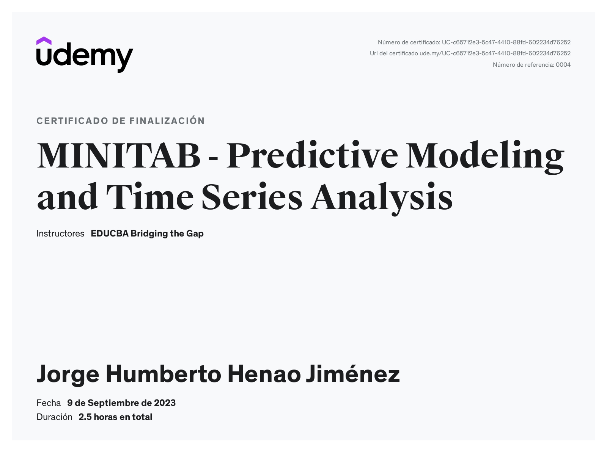
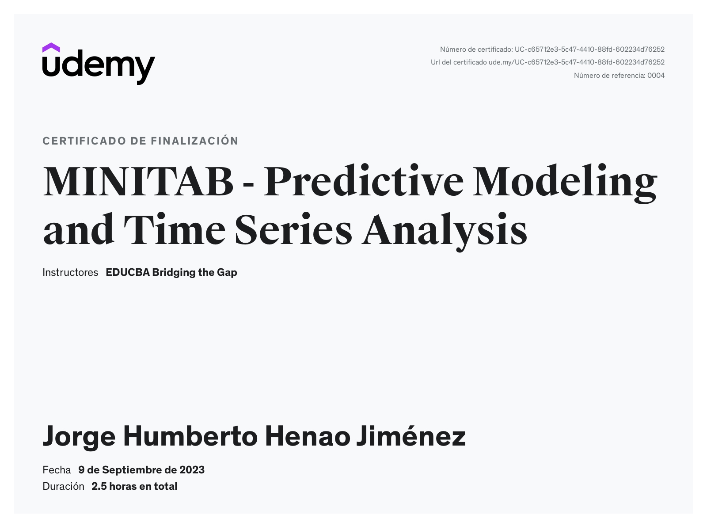
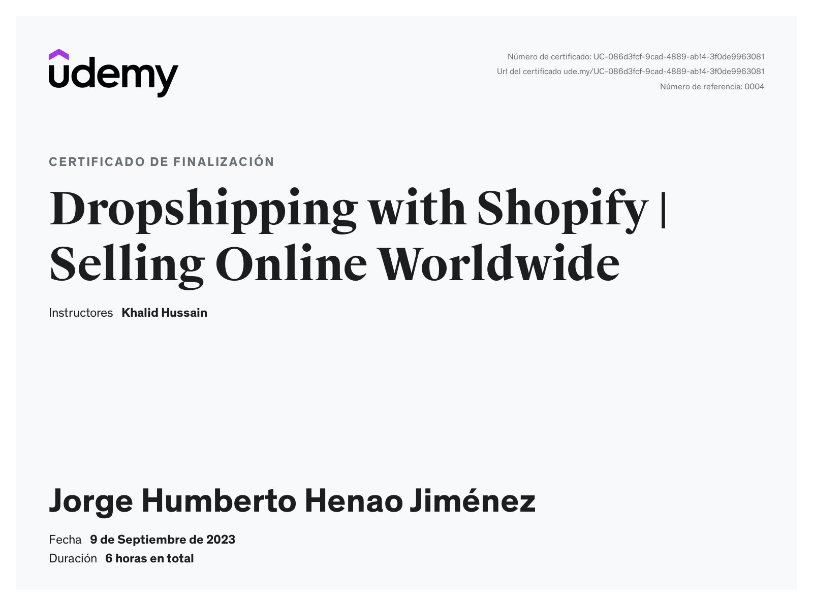
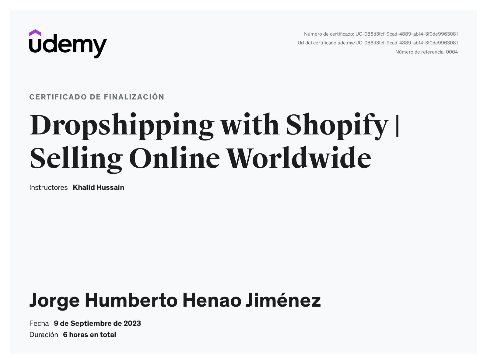

- Ingeniería de producción Industrial y de Manufactura. Experto en gerencia de plantas industriales.
- Armador naviero y dueño de buque. Encargado de la gestión del buque y mantenimiento. Principales funciones: Como
dueño de buque, dotar al buque de la tripulación y las provisiones correspondientes, presentarlo en tiempo
y forma en el lugar contratado, recibir la mercancía a bordo y transportar el cargamento hasta su lugar de
destino y descargue seguro de las mercancías.
- Logística de transporte Marítimo, terrestre y fluvial. Experto en el RNDC y SICETAC del ministerio de
transporte de Colombia
Profesión: INGENIERÍA DE PRODUCCIÓN
Título: Ingeniero de Producción (Primera Promoción – año 1984), universidad EAFIT - Medellín.
Medellín - Colombia Sector: Servicios de Transporte Terrestre
Gerencia Comercial en renta y venta de maquinaria pesada. Consecución de nuevos clientes, Conversión de
clientes y cierres de negocios. recuperación y activación de clientes inactivos o perdidos, Presupuestos de ventas,
manejo de cartera, cobros de cartera, manejo de personal de ventas. capacitación del personal de ventas.
Medellín - Colombia Sector: Servicios de Transporte Terrestre
Gerencia comercial. Responsable por las principales cuentas, la facturación, ingresos y pedidos de los clientes
activos; la consecución de nuevos clientes potenciales y su conversión, manejo de la cartera, los cobros,
recuperación de clientes inactivos o perdidos, manejo de personal de ventas, manejo de software de ventas.
logística de almacenamiento, distribución y transporte.
Medellín - Colombia Sector: Servicios de Transporte Terrestre Gerente general de la cooperativa de COOVOLQUETEROS. Empresa de transporte terrestre en tracto camiones (mulas) y volquetas, desde las principales ciudades y los puertos marítimos del país. Servicio de urbaneo de CARBON TERMICO con volquetas doble troques en cargues y descargues de buque en puertos marítimos y sociedades portuarias.
Medellín – Colombia Sector: Servicios de Transporte Terrestre Gerencia General de la compañía, Armador naviero y operador portuario para el cargue y descargue de buques tipo Bulk Carrier, Cargue por shiploaders de carbón térmico y Carbón Coque, Descargue de fertilizantes, (Map, Dap, Urea, KCl, Fosfatos, Etc.) Químicos: (sulfato de sodio, carbonatos, sales, azúcar), Minerales: (Feldespatos, sal marina, cemento a granel, Clinker, Alimentos: cereales, maíz, trigo, cebada, lenteja, garbanzo, harina de soja, etc.); Contratación y logística para el transporte terrestre de mercancías de IMPORTACION Y EXPORTACION en contenedores y carga suelta unitarizada.
Cartagena – Colombia Sector: Distribución / Consumo masivo de elementos de aseo Gerencia de Planta integral: Gerencia de Planta de Producción, Recursos humanos, suministros, Mantenimiento Industrial, Logística de suministro materias primas, Ingeniería de procesos y productos, Control de Calidad, investigación y desarrollo, logística y despachos de productos, etc.; crecimiento de los ingresos por las ventas y producción a niveles de 10.000 - 12.000 toneladas / mes en sal marina para consumo humano y exportaciones de este commodity a los países del caribe. Mejoras en relaciones con el estado, ministerios, INVIMA, IFI CONCESIÓN SALINAS, Ministerio de mina y energía, MINERCOL, ANLA, ANI, para explotación de minas, regalías y aporte del sector privado al desarrollo de las comunidades con responsabilidad social.
Bogotá – Colombia Sector: Vidrio - Vehículos Gerencia de la planta de producción de vidrios de seguridad automotriz niveles I al VII (Vidrio blindado, templado y laminado) para la industria automotriz y de uso arquitectónico para la seguridad.
Bogotá – Colombia Sector: Muebles y accesorios Gerente de manufactura en la fabricación de muebles de madera fina contra - chapada y fino acabado con chapillas finas y pintura en poliuretano, para la exportación hacia showroom en Estados Unidos y gabineteria en madera prensada, de cocinas y baños para el mercado nacional.
Bogotá – Colombia Sector: Consumo masivo Gerente Integral de la planta de Producción de revestimientos cerámicos para grandes formatos, especialista en Producción, Ingeniería y proyectos, Investigación y desarrollo, Mantenimiento, Control de Calidad, Planeación y Programación de plantas. Forecasting y modelado de pronósticos de demanda, usuario experto Integral del Software SAP y BPCS, como Herramienta ERP – MRPII.
Medellín- Colombia Sector: Cigarrillos consume masivo Jefatura de producción para la producción de cigarrillos, manejo de los ingenieros, supervisores y personal operativo en turnos rotativos. Gestión de costos y de materias primas, preparación y ejecución de presupuestos, control de inventarios en proceso. Control de costos de manufactura.
Especialista en:
• Gerencias de plantas de producción industrial. logística, operador portuario primario en puertos
marítimos, actividades de tarja, cargue de buques, descargue de buques, Uso eficiente de ‘clampshell bucket’
(almejas graneleras portuarias 5.0 – 25.0 m3) y tolvas de descargue granelero hacia silos graneleros de
almacenamiento o despacho directo hacia camiones); Experto implementador de normas BASC y PBIP (Código
Internacional para la Protección de los buques y de las Instalaciones Portuarias adoptado por la Organización
Marítima Internacional (OMI); operaciones logísticas portuarias internacionales, contratación y/o operación de
procesos marítimos y aéreos internacionales.
• Negociaciones con los navieros y con los operadores portuarios logísticos primarios. Agente Corredor de
contratos de fletamento marítimo, especializado en contrataciones de buques tipo Bulk carriers Vessels entre
3.000 – 60.000 GWT con grúas auto cargantes y descargantes (Gears). Gestión de agenciamiento aduanero con
sociedades de intermediación aduanera (SIA), procesos ITR, DTA, administración de personal, presupuestos y
control de gastos, coordinación de proyectos.
Diplomado en logística de transporte marítimo, terrestre, aereo y fluvial. PRONAVAL BARRANQUILLA, junio 2005 - agosto 2005


 



 
